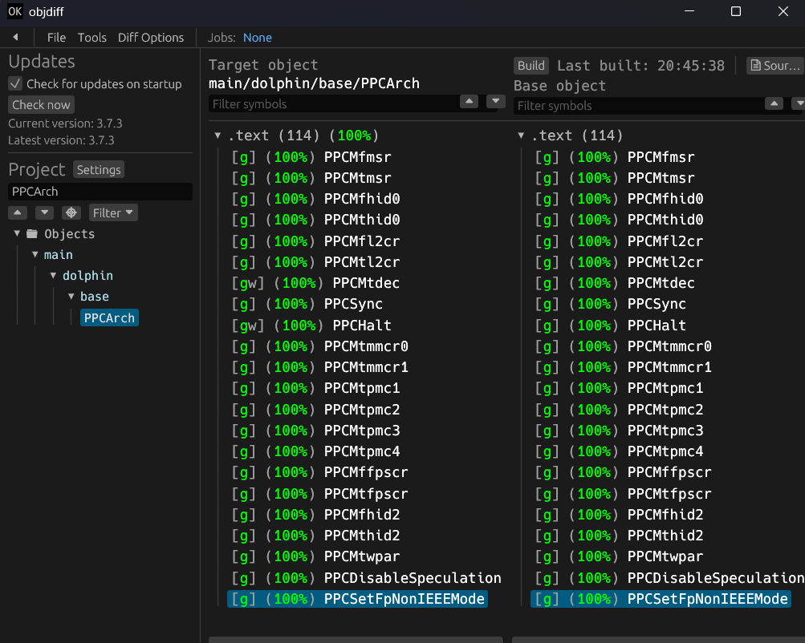

Decompilação de Sonic Heroes
Uma decompilação em andamento e sem fins comerciais de Sonic Heroes (SEGA, 2003) para o Nintendo GameCube: código C e C++ que, compilado com os compiladores originais, reproduz o jogo original byte a byte. Sem código do jogo, sem assets, sem download.
extern "C" void itembaloonObjectUnload(void)
{
endObjItempanel();
itembaloonResource = NULL;
}
extern "C" void itembaloonObjectLoad(void)
{
itembaloonResource =
objPointerReadFromClumpAnim(itembaloonModelName);
initObjItempanel();
}Progresso da decompilação
Os números vêm do relatório do objdiff de cada build na main. Uma função só conta quando compila exatamente para os mesmos bytes do original. Progresso completo e marcos →
O que este projeto é, e o que não é
É
- Código C, C++ e assembly inline escrito à mão
- Verificado byte a byte contra o
main.doloriginal e os 17 módulos REL - Um esforço sem fins comerciais de estudo e preservação
- Conferido pelo CI: cada mudança recompila o DOL e todos os RELs e compara o SHA-1
- Código aberto sob a licença MIT (apenas o nosso código)
Não é
- Um jogo jogável, um port ou um download do jogo
- Distribuição de ROM, imagem de disco ou asset do jogo
- Distribuição de código binário original ou assembly extraído do disco
- Afiliado ou endossado pela SEGA
- Monetizado: sem anúncios, sem doações, sem builds pagos
Você precisa de uma cópia do jogo obtida legalmente para compilar qualquer coisa. Um build só serve para quem já tem o jogo.
Como funciona uma decompilação correspondente
O objetivo não é um código que apenas se comporte como o jogo. O objetivo é um código que, compilado com as ferramentas originais, gere exatamente os mesmos bytes do disco.
Byte a byte
Cada função é reescrita até que o resultado compilado seja idêntico ao original, conferido no objdiff. Qualquer coisa menos que isso não conta.
Ferramentas originais
O jogo foi compilado com o Metrowerks CodeWarrior. As mesmas versões do compilador são baixadas na hora do build (e rodam pelo wibo no Linux e no macOS). Nenhum binário de compilador fica no repositório.
Verificado a cada mudança
O disco não traz arquivo .map, então nomes e limites de arquivo são deduzidos por evidências. Cada push recompila o main.dol e os 17 RELs e confere o SHA-1 contra o disco original.

Por que decompilar Sonic Heroes?
Preservação
Sonic Heroes saiu em 2003 para GameCube, PlayStation 2, Xbox e PC. Um código legível é o registro mais durável de como um jogo funciona de verdade, muito depois de o hardware sumir.
Entendimento
A física, o sistema de formação dos três personagens, os objetos das fases e a renderização em RenderWare viram código documentado que qualquer pessoa pode ler, em vez de suposições.
Uma base
Uma decompilação correspondente completa é a base em que ports de fãs, mods e correções costumam ser construídos. Este repositório só reproduz o jogo original; o que outras pessoas construírem depois é com elas.
Assistido por IA, verificado pelos bytes
Modelos de linguagem ajudam a escrever partes desta decompilação, e dizemos isso abertamente. Eles nunca decidem o que está pronto: uma função só é marcada como correspondente quando os bytes compilados são idênticos aos do original no objdiff, e o CI recompila e confere o hash do jogo inteiro a cada mudança.
Essa verificação não é enganada por código que só parece certo. Código que não reproduz exatamente as instruções, os dados e as relocações do original simplesmente não entra como correspondente.
Marcos recentes
61 pull requests de reconstrução integrados
Um lote grande de Cypress entra numa integração só (#612).
23,7% do código
O código compartilhado entre fases é escrito uma vez e ligado em todos os módulos que o usam, às vezes 13 de uma vez.
decomp.dev encerra o índice público
O rastreador de progresso usado desde julho para de listar projetos. O acompanhamento passa para o ByteMatch, que lê os mesmos relatórios do CI.
35,4% do código, mais da metade das funções
20.559 de 39.062 funções correspondem, e todas as funções das bibliotecas do SDK estão prontas.
Feito em público
Pessoas das cenas de decompilação de GameCube, homebrew de Dreamcast e modding de Sonic ajudam desde o primeiro dia. Dúvidas, pesquisa e divisão de tarefas acontecem no Discord; o código passa por pull requests no GitHub.